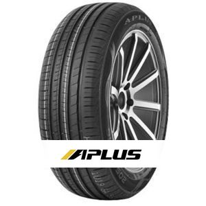

Aplus A609 155/65R13

RM 95.00
The Aplus A609 is an economical passenger car tyre designed for everyday driving, offering balanced dry and wet road grip, comfortable handling and reduced road noise. Its tread design promotes efficient water evacuation and even wear, making it a budget-friendly choice for compact cars and daily city driving.
Klang Hock Li Tyre Services Sdn Bhd, Klang, Selangor, Malaysia.
View live product details and enquire